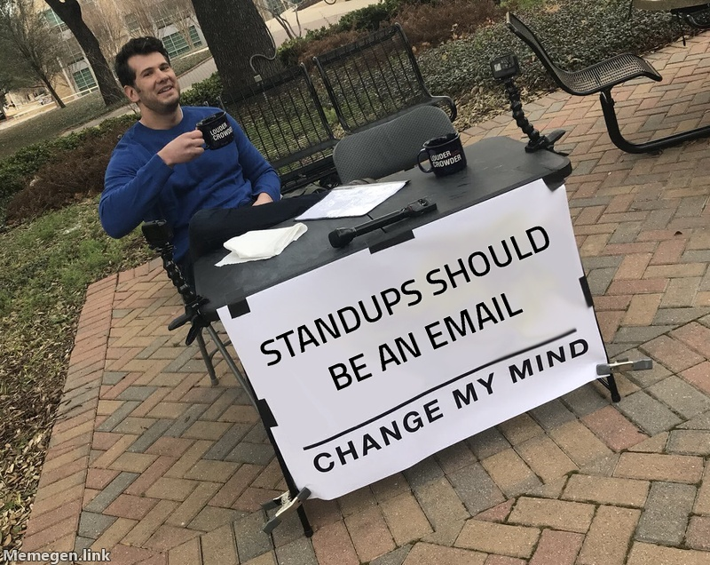

✕


MEME FACTORY standups that run long
1: ● Drake 8 2: ○ This is Fine 7 3: ○ Distracted 7
1: ● Drake 9 2: ○ This is Fine 7 3: ○ Distracted 8
1: ○ Drake 9 2: ● This is Fine 7 3: ○ Distracted 8
○ ○ ○ ● Write new formats…
1: ● Change Mind 9 2: ○ Drake 9 3: ○ Fine 7

Keeping standup to 15 minutes
Debating the sprint name for 40
A 15-minute standup
The PM's 45-minute "quick sync"
Minute 38 of the 15-minute standup
Standups should be an email
a: Approve r: Remix c: Copy v: Browser t: Talk
─────────────────────────────────────────────────────────────
you meaner, make it about the PM
factory Remixed all three. Sharper PM angle.
you use 2
factory Showing This is Fine.
you different format
factory New templates, coming up.
Say: meaner · use 2 · approve · post to #social
Tell it what would be funnier
Or which one you want
Or try other formats
⏎
⏎
⏎